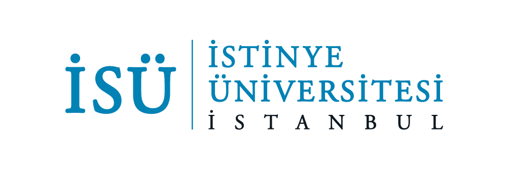

Ağ paketlerinin toplanmasından zafiyetlerin tespitine ve engelleme kurallarına kadar geçen tüm siber dedektiflik sürecini renk kodlu adımlarla inceleyin.
Canlı trafiğin dinlenebilmesi için ethernet kartı (eth0, en0) veya localhost (lo0) üzerinde pusuya yatılır.
Ağdan akan ham baytlar yakalanır. Paketlerin yönlendirme bilgileri (başlık) ve asıl taşınan veri (yük) ayrılır.
Scapy veya PCAP Reader ham veriyi okur; IP, Port ve protokolleri insan tarafından okunabilir sözlüklere dönüştürür.
Hedef IP ve portlara paket göndererek açık kapıları, çalışan servis sürümlerini ve cihaz türlerini haritalandırır.
Cevap beklenmeyen binlerce yarım bağlantı isteği (SYN) atılarak hedef sistemin belleğinin kilitlenmesi durumudur.
Tek bir kaynak IP'nin, çok kısa sürede hedef sistemdeki onlarca farklı port kapısını hızlıca yoklamasıdır.
Güvenlik duvarını aşmak amacıyla çalınan verilerin DNS isteklerinin içine saklanarak dışarı sızdırılmasıdır.
Tehdit algılandığında, saldırgan IP iptables veya firewall kuralları ile engellenir ve tüm kapılar kilitlenir.